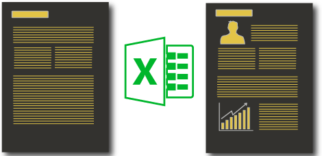
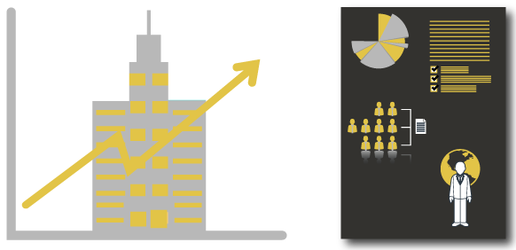

Aplicacion de Soluciones basadas en la Nube El mejor Software de Gestión Empresarial para pequeñas y medianas empresas.
Cualidades
Segura
Gestionada, monitorizada y mantenida por nuestros expertos globales y data centers seguros, SAP Business ByDesign le ofrece unos estándares de seguridad de talla mundial, la administración del sistema y el soporte para las soluciones. Nos encargamos del mantenimiento y actualizaciones para que usted se pueda centrar en su negocio –y no en su infraestructura de TI. Además, proporcionamos a nuestros clientes la certeza y la confianza, la solidez financiera y el liderazgo de SAP, el fabricante de software más grande del mundo.
Procesos Empresariales Globales
La solución de SAP Business ByDesign es la más completa y adaptable de las propuestas empresariales On Demand específicamente diseñada para las empresas mediana que quieren tener un crecimiento rentable. Con los escenarios empresariales de ByDesign, los procesos empresariales que se desarrollan en departamentos distintos se integran en sencillos procesos globales. Todas las personas implicadas en el escenario empresarial comparten los mismos datos al vez, la gestión es trasparente y tiene el control sobre todos las operaciones. Así, pueden detectarse rápidamente todos los asuntos pendientes y oportunidades, y dar una respuesta inmediata.

